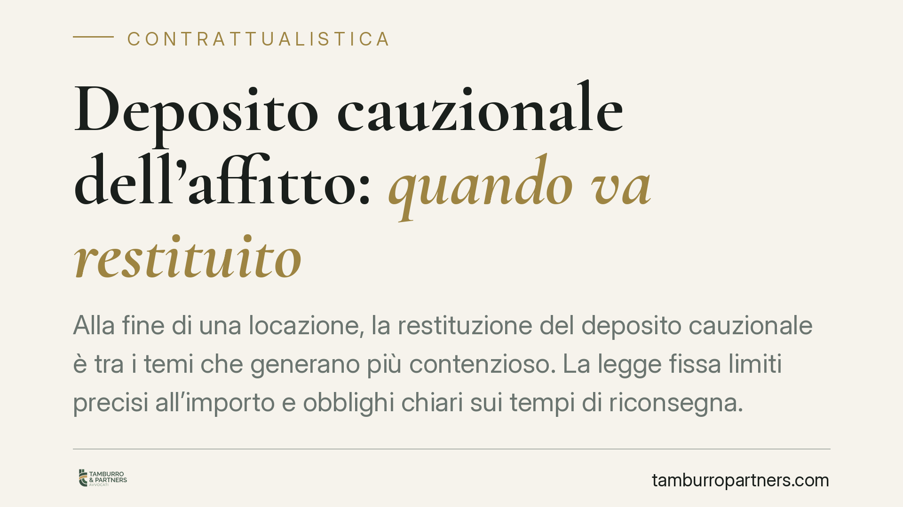

Deposito cauzionale dell'affitto: quando va restituito
Alla fine di una locazione, la restituzione del deposito cauzionale è tra i temi che generano più contenzioso. La legge fissa limiti precisi all'importo e obblighi chiari sui tempi di riconsegna. Sapere quando e quanto il locatore deve restituire, e come reagire a trattenute non motivate, evita conflitti e tutela sia chi affitta sia chi conduce l'immobile.

Inquadramento normativo
Il deposito cauzionale nelle locazioni abitative è disciplinato dall'art. 11 della Legge n. 392/1978 (cosiddetta legge sull'equo canone, ancora vigente per questa parte). La norma stabilisce due regole fondamentali.
La prima riguarda l'importo: la cauzione non può superare le tre mensilità del canone. Un deposito richiesto in misura maggiore è, per la parte eccedente, nullo. La seconda regola impone che la somma sia produttiva di interessi legali, che il locatore deve corrispondere al conduttore alla fine di ogni anno di locazione.
La funzione del deposito è di garanzia: serve a coprire eventuali danni all'immobile causati dal conduttore o canoni rimasti insoluti. Non è una somma che il locatore può trattenere a proprio piacimento. La giurisprudenza di legittimità (Cassazione) ha chiarito che, cessato il rapporto e riconsegnato l'immobile, il locatore ha l'obbligo di restituire la cauzione, salvo che non vanti crediti specifici e provati.
Implicazioni pratiche
Il punto più delicato è il momento della restituzione. La legge non indica un termine perentorio, ma l'orientamento consolidato è che la restituzione sia dovuta al termine della locazione, contestualmente o subito dopo la riconsegna dell'immobile.
Il locatore può trattenere la somma solo se agisce per far valere un credito. In concreto, se ritiene di aver subito danni o di vantare canoni non pagati, deve attivarsi: la Cassazione ha stabilito che il locatore che intende trattenere la cauzione deve proporre domanda giudiziale per l'accertamento del proprio credito. Non basta un rifiuto generico o l'affermazione di presunti danni.
Questo significa che, in assenza di contestazioni formalizzate e provate, il conduttore ha diritto alla restituzione integrale, maggiorata degli interessi legali maturati.
Un errore frequente è confondere il normale deperimento d'uso con il danno. L'usura fisiologica dell'immobile e degli arredi, derivante dal godimento ordinario, non giustifica trattenute. Solo i danni eccedenti il normale utilizzo possono legittimare una richiesta risarcitoria.
Per il conduttore, la prova dello stato dell'immobile è decisiva. Un verbale di consegna e riconsegna, corredato da fotografie datate, riduce drasticamente il margine di contestazione. Per il locatore, allo stesso modo, la documentazione dello stato iniziale è la base per qualsiasi pretesa risarcitoria.
Come recuperare il deposito non restituito
Se il locatore non restituisce la cauzione senza motivazione, il conduttore può agire per il recupero. Il credito è certo, liquido ed esigibile: ciò consente, in presenza di prova scritta del versamento, di richiedere un decreto ingiuntivo, procedura più rapida rispetto a una causa ordinaria.
Prima di procedere giudizialmente è quasi sempre necessario esperire la mediazione obbligatoria, prevista in materia di locazioni. Si tratta di un passaggio preliminare che, in alcuni casi, permette di chiudere la vicenda senza giudizio.
Ricordiamo che il diritto alla restituzione si prescrive nell'ordinario termine decennale: chi tarda troppo rischia di perdere la possibilità di agire.
Cosa fare in concreto
- Redigi sempre un verbale di consegna e riconsegna dell'immobile, con fotografie datate, così da fissare lo stato dei luoghi.
- Conserva la prova del versamento della cauzione (bonifico, ricevuta o clausola contrattuale) e traccia gli interessi legali maturati anno per anno.
- Invia una diffida scritta al locatore che non restituisce la somma, indicando importo, interessi e termine di adempimento.
- Distingui il deperimento d'uso dal danno: pretendi che eventuali trattenute siano motivate, quantificate e documentate.
- Valuta la via del decreto ingiuntivo, previo tentativo di mediazione, quando la restituzione viene negata senza giustificazione.
La gestione ordinata della documentazione, sin dalla firma del contratto, è lo strumento più efficace per prevenire il contenzioso. Consigliamo di formalizzare per iscritto ogni fase del rapporto locatizio, senza affidarsi ad accordi verbali.
Disclaimer
Contributo informativo a cura di Tamburro & Partners - Avv. Giuseppe Tamburro. Non costituisce parere legale.
Ogni contratto ha il suo equilibrio.
Se vuoi una revisione delle clausole o una redazione su misura, scrivi allo studio. Ti rispondiamo entro un giorno lavorativo.